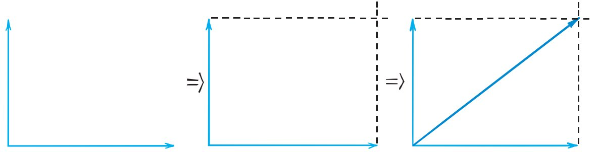

1. Define vector and give one force example that includes both magnitude and direction.
2. State the rule for combining two forces that point in the same direction.
3. State the rule for combining two forces that point in opposite directions.
4. What information does a longer arrow communicate when all arrows use the same scale?
5. Name one scalar quantity and one vector quantity from the section.
6. A box has 42 N left and 18 N right. Find the net force and direction.
7. A sled has 16 N right, 21 N right, and 12 N left. Determine the net force.
8. Use the right-angle vector image. Identify the two component vectors and the diagonal resultant. Explain how the diagonal summarizes their combined effect.

9. Object A has 18 N right and 6 N left. Object B has 30 N left and 20 N right. Compare their net-force magnitudes and directions.
10. A force diagram shows one 24-N arrow east and one 10-N arrow north. Before finding any numerical resultant, explain what you can conclude from the directions and relative magnitudes.
11. A classmate says, “If two force arrows are the same length, they always cancel.” Critique the statement and give one example where equal-length arrows cancel and one where they do not.
12. A modeler draws a resultant arrow that points opposite both original same-direction forces. Evaluate the model and describe how the resultant should be revised.
13. Which description is a vector?
14. What does the magnitude of a force vector describe?
15. Forces of 11 N left and 7 N left act on the same object. The net force is
16. Forces of 22 N right and 9 N left act on an object. The net force is
17. What is the resultant?
18. Which pair of perpendicular forces could have a diagonal resultant?
19. On the same scale, Arrow X is shorter than Arrow Y. Which statement is supported?
20. Which part of a vector arrow communicates direction?